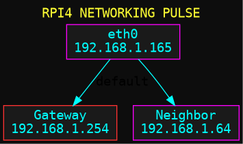
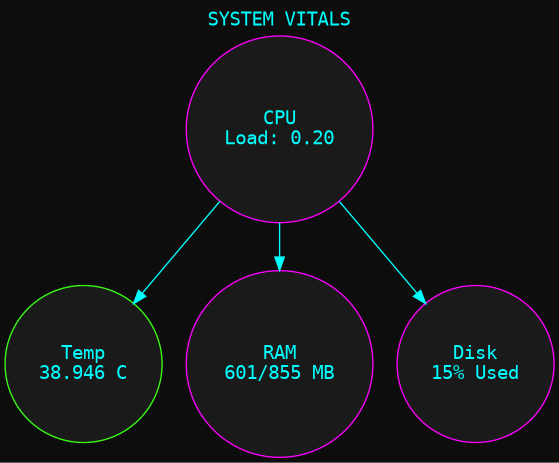
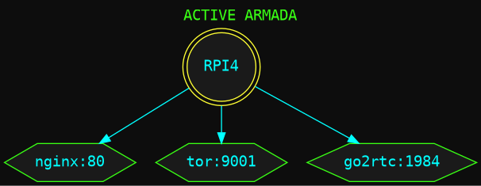
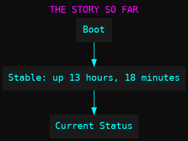
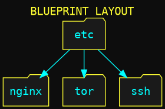
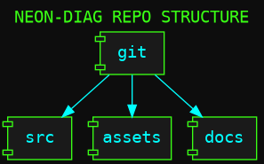
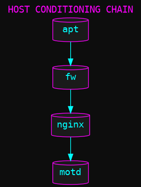
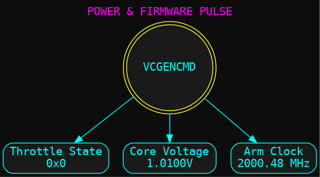

RPI4 NEON DIAGNOSTICS
NODE-ALPHA :: 192.168.1.165
Networking Pulse

System Vitals

Active Armada

The Story So Far

Blueprint Layout

Repo Architecture

Conditioning Chain

Power & Firmware

SYSTEM STANDBY...